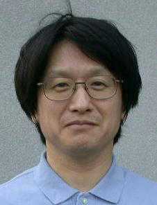
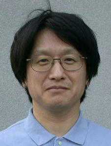

Doctor of Philosophy in Engineering (Kyoto university)
Professional Experience:
Kyoto institute of technology(Research associate, Assistant Professor, Associate Professor, Professor)
E-mail:murata
| Top Page | Research Topics | Research Reports | Research Staff | Machines | Access |
|---|
| Philosophy | Academic-Industrial Collaboration |
Recruits | Information on Lecture |
Links | Glossary |
|---|
|
 |
Degree: Doctor of Philosophy in Engineering (Kyoto university) Professional Experience: Kyoto institute of technology(Research associate, Assistant Professor, Associate Professor, Professor) E-mail:murata |
|
Degree: Doctor of Philosophy in Engineering (Osaka university) Professional Experience: Industrial Engineer at Kyocera Kabushiki Kaisha, Research Fellowships of the Japan Society for the Promotion of Science for Young Scientists (DC2), Kyoto institute of technology(Assistant Professor) FAX : 075-724-7300 E-mail:tyohsuke CV |